BASE BASE etc.
Jesper List Thomsen
BASE BASE etc. is a 6-day reading event which ruminates on the body and its language, political perversion, public performance, bodybuilding, the vernacular of the gym, and the coalescence of corporal and semantic expression. Comprised of a live reading, an installation of sculptures and a public reading group, this event further acts as a prologue for a solo exhibition by List Thomsen that will take place at Hot Wheels Projects, late 2019.
Monday 8/4 List Thomsen will read from a recently completed collection of his texts titled BASE BASE, published by Juan de la Cosa/John of the Thing. Nine new sculptural elements will be installed throughout Hot Wheels Projects for the duration of the reading event. This installation will subsequently be rearranged to host a public reading group on Saturday 13/4, structured around Kathy Acker’s 1992 essay Against Ordinary Language: The Language Of The Body.
Monday 8/4 Opening 20:00 - 23:00 with reading by Jesper List Thomsen
Saturday 13/4 Closing 17:00 - 20:00 with reading group on Against Ordinary Language: The Language Of The Body by Kathy Acker
Conversation to be continued in December of 2019…
~~~~~~~~~~~~~~~~~~~~~~~~~~~~~~~~~~~~~~~~~~~~~~~~~~~~
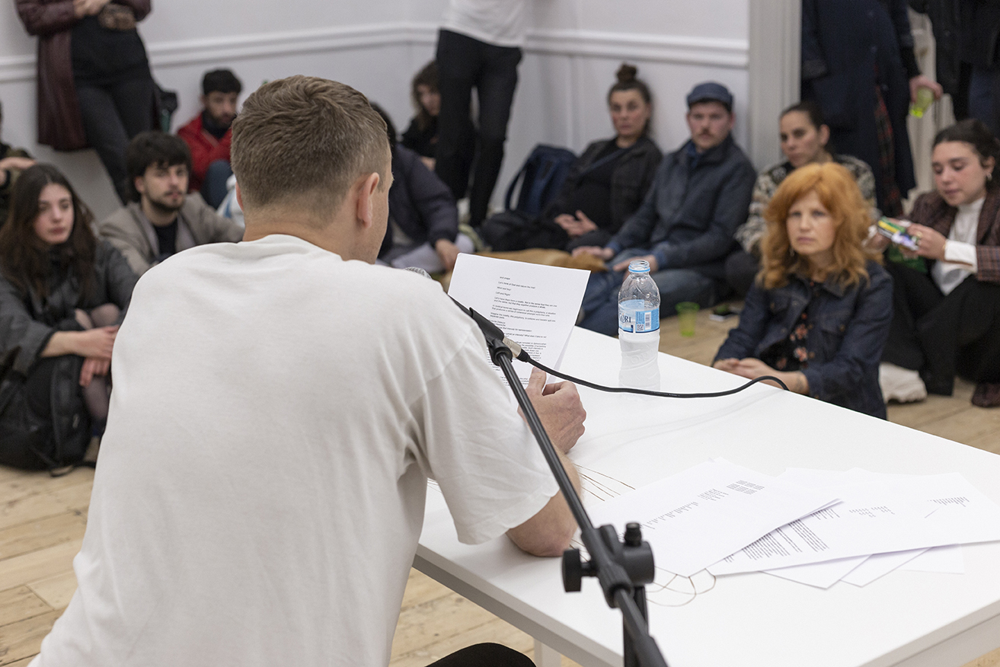
Jesper List Thomsen, public reading of BLACKBIRDS, published by John of the Thing, 2018, reading duration 9.41 min
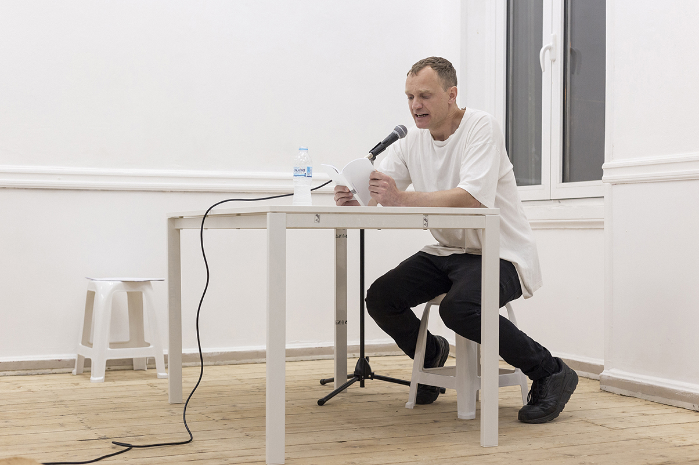
Jesper List Thomsen, public reading of writing in progress, writing produced on the les pritdele scalier residency, Paris, 2019. 16.08 min
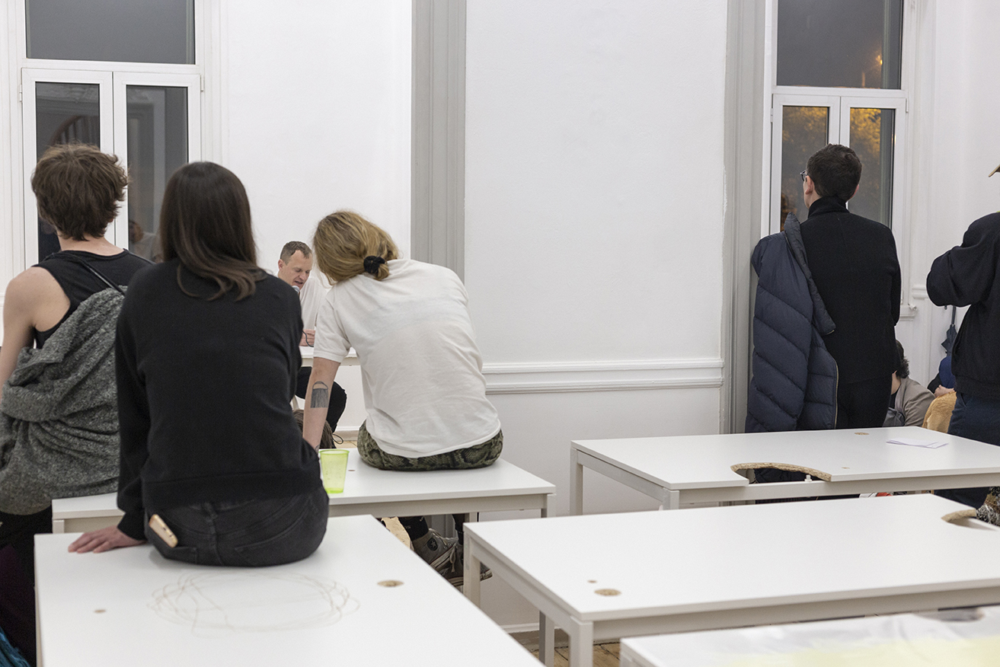
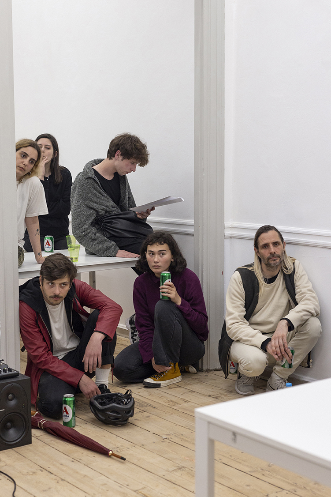
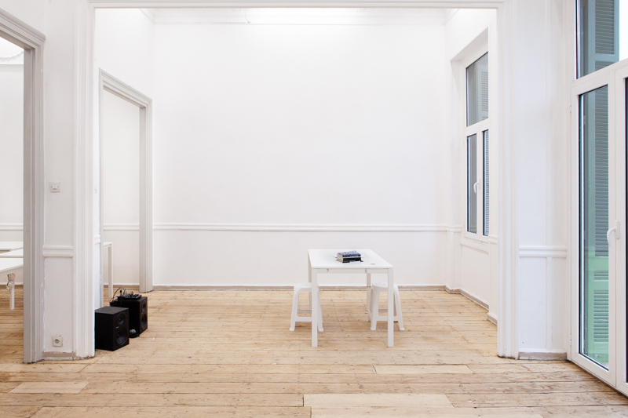
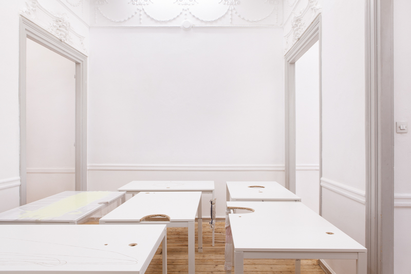
Installation view, reading table with text Against Ordinary Language: The Language Of The Body by Kathy Acker and further contextual writing
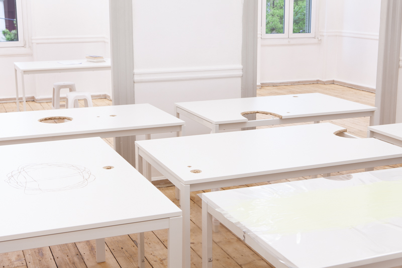
Jesper List Thomsen, Untitled (anus, mouth, tract), Ikea table, 74 x 74 x 125cm, 2019
Jesper List Thomsen,Untitled (anus, head, mouth), Ikea table, 74 x 74 x 125 cm, 2019
Jesper List Thomsen, Untitled (anus, mouth, tract), Ikea table, 74 x 74 x 125 cm, 2019
Jesper List Thomsen, Untitled (anus, mouth, neck), Ikea table, 74 x 74 x 125 cm, 2019
Jesper List Thomsen, Untitled (anus, hip, mouth), Ikea table, 74 x 74 x 125 cm, 2019
Jesper List Thomsen, Untitled (anus, chest, mouth), Ikea table, 74 x 74 x 125 cm, 2019
Jesper List Thomsen, Untitled (anus, mouth, thigh), Ikea table, 74 x 74 x 125 cm, 2019
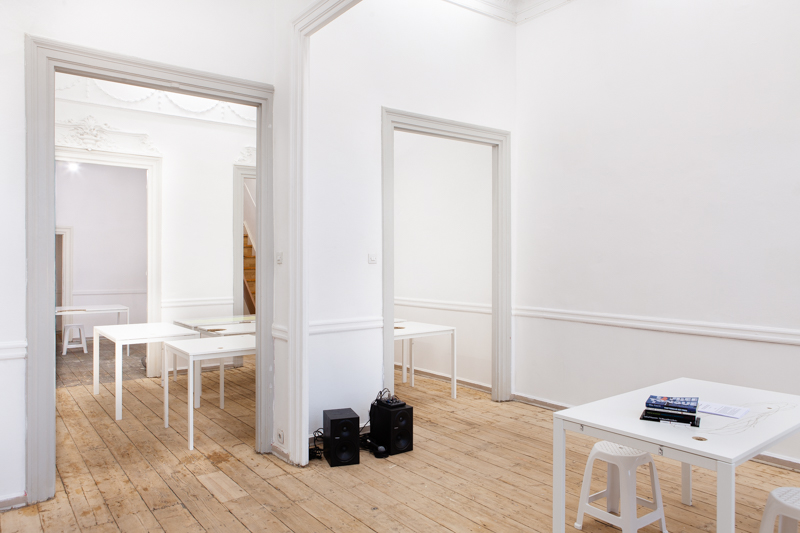
Jesper List Thomsen, Untitled (anus, chest, mouth), Ikea table, 74 x 74 x 125 cm, 2019
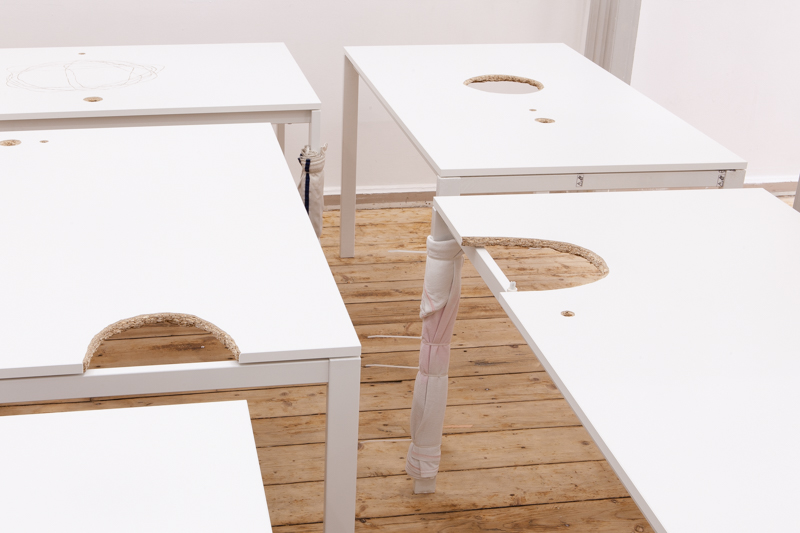
Jesper List Thomsen, Untitled (anus, mouth, tract), hip, mouth), Ikea table, 74 x 74 x 125 cm, 2019
Jesper List Thomsen, Untitled (anus, mouth, tract), Ikea table, 74 x 74 x 125 cm, 2019
Jesper List Thomsen, Untitled (anus, chest, mouth), Ikea table, 74 x 74 x 125 cm, 2019
Jesper List Thomsen, Untitled (anus, head, mouth), Ikea table, 74 x 74 x 125 cm, 2019
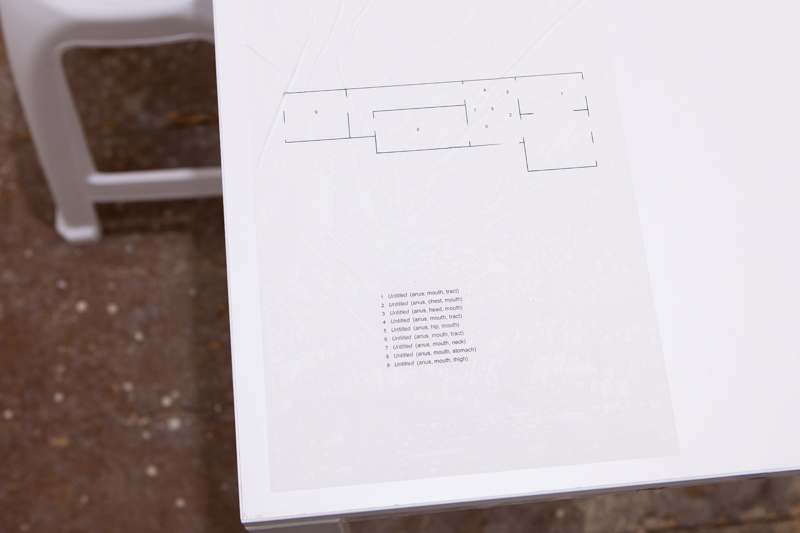
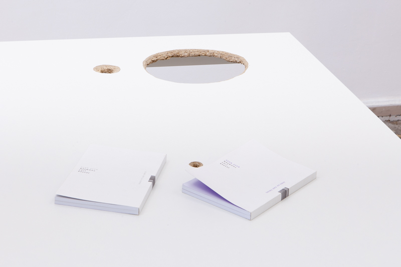
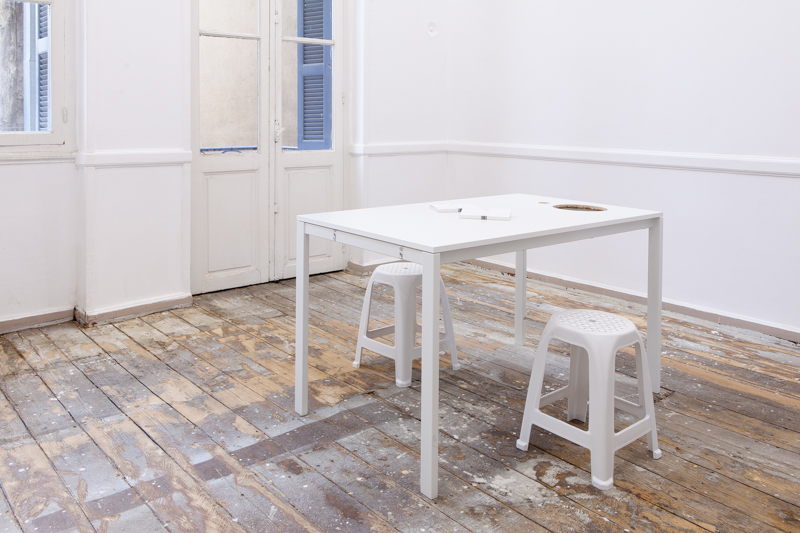
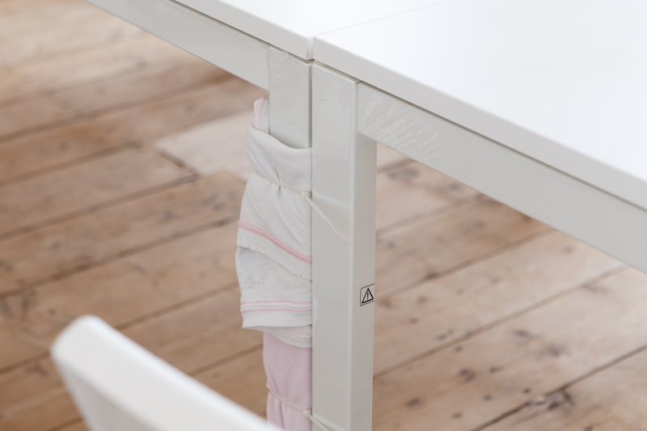
Jesper List Thomsen, BASE BASE, published by John of The Thing, 2018
Jesper List Thomsen, Untitled (anus, mouth tract), Ikea table, 74 x 74 x 125 cm, 2019
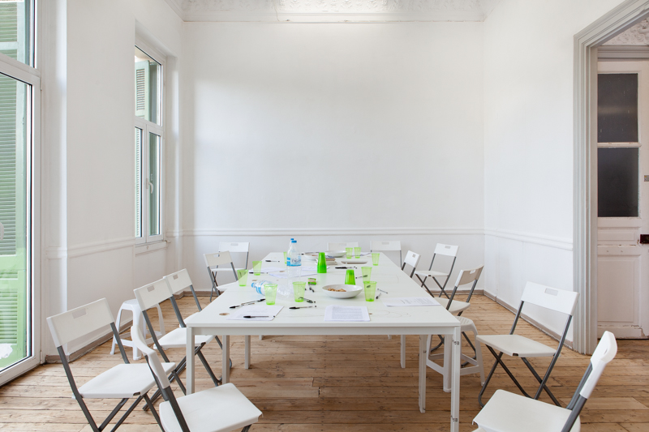
Remnants of reading group conducted by Jesper List Thomsen on with reading group on Against Ordinary Language: The Language Of The Body by Kathy Acker, 13/04/2019
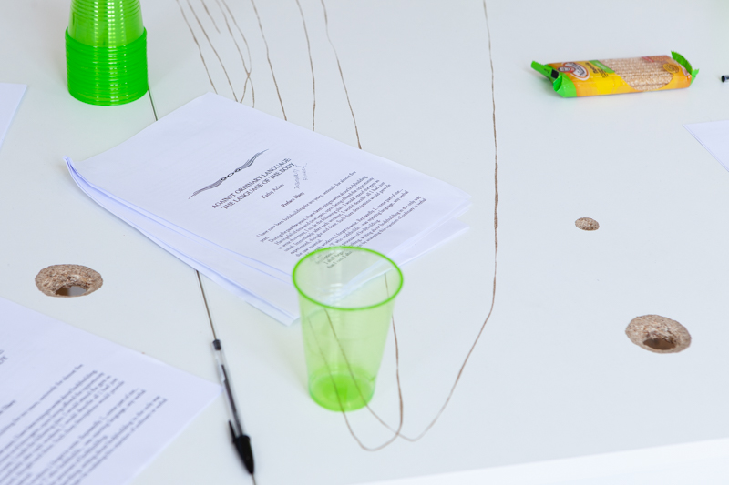